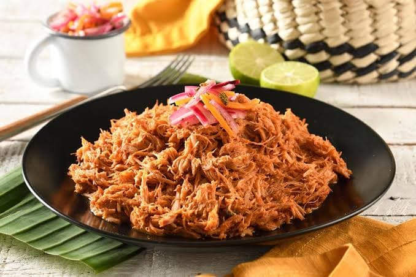

- 1 kilo de pulpa de cerdo
- Jugo de limón
- Una pizca de sal
- Dos dientes de ajo
- 1 cebolla morada
- 1 litro de jugo de naranja agria
- 1/4 de cebolla
- 100 gr Chiles guajillo desvenados
- 100 g de pasta de achiote
- 1/4 de taza de vinagre
- 1 cucharadita de orégano
Cochinita Pibil
- Cortar la carne
- Licuar el jugo de naranja juanto con el 1/4 cebolla, el vinagre,el ajo, los chiles y el achiote.
- Despues en una olla poner a cocer carne junto a la mezcla.
- Tomar la cebolla morada y partirla en juliana.
- En un sarten poner la cebolla y saltear.
- Mas tarde en un recipiente agregar vinagre, una pizca de sal, oregano y las cebollas salteadas.
- En un plato agregar todo lo anterior y disfrutar